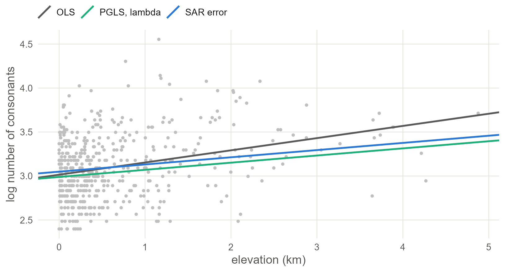

8 The classical toolkit: PGLS and SAR
The oldest remedies for each kind of dependence, fitted by maximum likelihood in a second each: phylogenetic least squares, phylogenetic logistic regression, and simultaneous autoregressive models.
8.1 Set up
Most classical tools are built for a continuous outcome, so this chapter adds a second question to the running example: do languages at altitude have larger consonant inventories? Ejectives are extra consonants, so if Everett’s effect is real it should leave a trace here too. The outcome is the number of consonants on the log scale.
library(ape)
library(phylolm)
library(spdep)
library(spatialreg)
library(ggplot2)
base <- "https://rehan-muh.github.io/tutorials/data/"
d <- read.csv(paste0(base, "languages.csv"))
tree <- read.tree(paste0(base, "glottolog_tree.nwk"))
d$elev_km <- d$elevation / 1000
d$log_cons <- log(d$n_consonants)
rownames(d) <- d$glottocode # phylolm matches rows to tips by row nameThe baseline is ordinary least squares.
## Estimate Std. Error t value Pr(>|t|)
## (Intercept) 3.015 0.02 148.85 0
## elev_km 0.139 0.02 6.95 08.2 Phylogenetic generalised least squares
Ordinary least squares assumes the residuals are independent. Phylogenetic generalised least squares (PGLS) (Grafen 1989; Freckleton et al. 2002) assumes they are correlated according to the tree, with the correlation matrix from Chapter 2. It is the same model as the phylogenetic random effect in brms, for a continuous outcome, fitted by maximum likelihood.
phylolm() (Ho and Ané 2014) fits it. model = "BM" uses the tree’s correlations as they stand (Brownian motion).
pgls_bm <- phylolm(log_cons ~ elev_km, data = d, phy = tree, model = "BM")
round(summary(pgls_bm)$coefficients, 3)## Estimate StdErr t.value p.value
## (Intercept) 2.989 0.03 99.30 0
## elev_km 0.081 0.02 4.08 0Taking the tree at face value is a strong assumption. model = "lambda" relaxes it by estimating Pagel’s λ, which shrinks every off-diagonal correlation by the same factor. At λ = 0 the model is ordinary least squares; at λ = 1 it is Brownian motion; in between, relatives resemble each other less than the tree alone would predict.
pgls_l <- phylolm(log_cons ~ elev_km, data = d, phy = tree, model = "lambda")
round(summary(pgls_l)$coefficients, 3)## Estimate StdErr t.value p.value
## (Intercept) 2.989 0.03 99.30 0
## elev_km 0.081 0.02 4.08 0## [1] 1optpar is the estimated λ. Here it lands on its upper limit of 1, so the two fits coincide: consonant inventories are at least as tree-like as the matrix assumes. That will not always happen, and the model with λ is the one to report by default, because it lets the data say how much the tree matters.
Either way the slope is about 40% smaller than the ordinary one, and its t-value drops from 6.9 to 4.1.
With your own data.
nlme::gls()fits the same models withcorrelation = corBrownian(1, tree, form = ~glottocode)orcorPagel(), and is useful when you also need other features ofgls.phylolm()is faster and matches rows to tips for you, as long as the row names of the data are the tip labels.
8.3 Phylogenetic logistic regression
For a binary outcome the same package has phyloglm(). Back to ejectives:
plog <- phyloglm(ejectives ~ elev_km, data = d, phy = tree,
method = "logistic_MPLE", btol = 30)
round(summary(plog)$coefficients, 3)## Estimate StdErr z.value p.value
## (Intercept) -1.293 1.322 -0.978 0.328
## elev_km 0.263 0.174 1.512 0.131##
## 0.406What this assumes. This is not the model of Chapter 2 fitted by another route. It is the model of Ives and Garland (2010), in which the binary feature itself switches on and off along the branches.
alphais the rate at which lineages forget their ancestral state: a smallalphameans strong phylogenetic signal. Its slope is not conditional on a lineage effect, so compare it with the naive slope (0.84) and with the averaged slope computed in Chapter 2, not with the brms slope as printed.
Set that slope beside the others. It is the most sceptical estimate in the series: smaller than the naive slope, and with an interval that includes zero. The models in Chapters 2 to 7 let each lineage have its own baseline and found an effect of elevation around it. This one asks whether elevation predicts the feature once the feature’s own inheritance is modelled, and finds the evidence thinner. Both are defensible readings of the phrase “controlling for phylogeny”, and a careful paper reports that the answer depends on which is meant.
8.4 Simultaneous autoregressive models
The classical spatial counterpart works on a neighbour graph, like Chapter 4. Build the same five-nearest-neighbour weights and test the residuals of the ordinary regression.
coords <- as.matrix(d[, c("lon", "lat")])
nb <- make.sym.nb(knn2nb(knearneigh(coords, k = 5, longlat = TRUE)))
lw <- nb2listw(nb, style = "W")
lm.morantest(ols, lw)##
## Global Moran I for regression residuals
##
## data:
## model: lm(formula = log_cons ~ elev_km, data = d)
## weights: lw
##
## Moran I statistic standard deviate = 17, p-value <2e-16
## alternative hypothesis: greater
## sample estimates:
## Observed Moran I Expectation Variance
## 0.417249 -0.002826 0.000626Inventory size is strongly autocorrelated in space. A simultaneous autoregressive (SAR) model writes that dependence into the regression (Anselin 1988). There are two versions, and they say different things.
The error model says the residuals are spatially correlated: neighbours share unmeasured influences. Space is a nuisance to be absorbed.
\[y = X\beta + u, \qquad u = \lambda W u + \varepsilon\]
## Estimate Std. Error z value Pr(>|z|)
## (Intercept) 3.049 0.036 83.6 0
## elev_km 0.082 0.020 4.1 0## lambda
## 0.626The lag model says the outcome itself depends on the neighbours’ outcomes: a language’s inventory is pulled towards those around it. Space is a process, diffusion.
\[y = \rho W y + X\beta + \varepsilon\]
## Estimate Std. Error z value Pr(>|z|)
## (Intercept) 1.152 0.129 8.96 0
## elev_km 0.078 0.016 4.76 0## rho
## 0.612Watch out. In the lag model the coefficient of
elev_kmis not the effect of elevation. Raising one language’s elevation changes its inventory, which pulls on its neighbours, which pull back.impacts()adds up those loops (LeSage and Pace 2009). Its direct impact is the number comparable to the other models’ slopes.
## Impact measures (lag, exact):
## Direct Indirect Total
## elev_km dy/dx 0.0866 0.116 0.202Which one? If your interest is the slope and space is something to control for, use the error model. Use the lag model only when diffusion between neighbours is itself the hypothesis.
8.5 Side by side
tab <- rbind(
"OLS" = summary(ols)$coefficients["elev_km", 1:2],
"PGLS, BM" = summary(pgls_bm)$coefficients["elev_km", 1:2],
"PGLS, lambda" = summary(pgls_l)$coefficients["elev_km", 1:2],
"SAR error" = summary(sar_err)$Coef["elev_km", 1:2])
tab <- cbind(tab, ratio = tab[, 1] / tab[, 2])
round(tab, 3)## Estimate Std. Error ratio
## OLS 0.139 0.02 6.95
## PGLS, BM 0.081 0.02 4.08
## PGLS, lambda 0.081 0.02 4.08
## SAR error 0.082 0.02 4.10lines <- data.frame(
model = c("OLS", "PGLS, lambda", "SAR error"),
intercept = c(coef(ols)[1], coef(pgls_l)[1], sar_err$coefficients[1]),
slope = c(coef(ols)[2], coef(pgls_l)[2], sar_err$coefficients[2]))
ggplot(d, aes(elev_km, log_cons)) +
geom_point(colour = "grey75", size = 0.9) +
geom_abline(data = lines, linewidth = 0.9,
aes(intercept = intercept, slope = slope, colour = model)) +
scale_colour_manual(values = c("grey35", "#1BAF7A", "#2A78D6"), name = NULL) +
labs(x = "elevation (km)", y = "log number of consonants")
Figure 8.1: Consonant inventory size against elevation, one point per language, with the regression line of three models. Ordinary least squares draws the steepest line. The phylogenetic and spatial models, which know that the points come in clusters, draw nearly the same shallower one.
Because the outcome is continuous, these slopes share a scale and can be compared directly, unlike the logistic slopes of Chapter 5. The tree and the neighbour graph tell the same story from different directions: the ordinary slope was inflated by clustering, and what remains is smaller but still clearly positive.
8.6 When the classical tools are enough
They are enough when the outcome is continuous, or binary with phyloglm(), and one kind of dependence is your concern. They are fast, they are what many reviewers know, and they make a good first pass and a good robustness check.
They run out when you need both kinds of dependence in one model, when the outcome is a count or a category, or when languages contribute several observations. None of these functions takes a tree and a neighbour graph together. For that, use the joint models of Chapter 5, Chapter 6 or Chapter 7.
brms can also fit SAR terms, with sar(lw, type = "error") or type = "lag" in the formula, for Gaussian and Student-t outcomes. That gives the models of this section the priors and posterior summaries of the earlier chapters.
8.7 The series in one paragraph
Languages share features because they are related and because they are neighbours, and a regression that ignores both is too confident. Model ancestry with a correlation matrix from the tree. Model geography with a surface or a neighbour graph. Put both in one model when you can, report the slope under several specifications, and say plainly how the tree and the graph were built. Every one of those steps is a single call to a package you can install today.